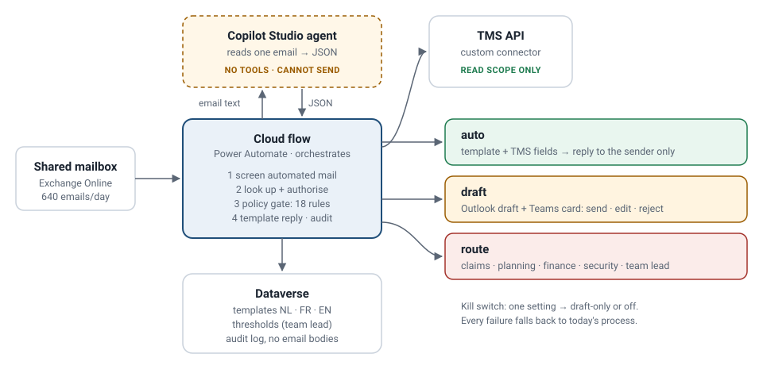

AI & automation consulting · logistics · Copilot Studio · Power Automate · TMS API
"Where is my delivery?"
Answered in minutes, never to the wrong person.
A fictional Belgian pallet distributor gets 640 customer emails a day, and half of them ask something the transport system already knows. This case takes it from a mailbox analysis to a tested design. A Copilot Studio agent reads each email, a Power Automate flow checks the TMS and 18 policy rules, and the business case says honestly where the money comes from.
Independent portfolio case study based on a fictional organisation (Corlaan Logistics). It contains no confidential information from any real employer. All figures are illustrative assumptions — not real company data.
The problem
of the mailbox asks "where is it?" or "send the proof of delivery"
of agent time a year, mostly spent finding the shipment, not writing
median first response; 5.2 h for French-speaking customers
requested for 2027. The sponsor's answer: "show me what can be automated first"
The journey
It starts before the mailbox: an inspiration session and a discovery workshop that ranked eight use cases. It ends after go-live: reviewer training, champions and a weekly review.
The design in one picture

Five decisions that shape it
| Decision | Instead of | Why |
|---|---|---|
| The model reads; rules decide | an agent with send and TMS tools | On the test set, the naive design harms in 23 of 48 emails |
| Agent without tools, called from a flow | an autonomous agent with tools, or custom code | Testable reading, supportable by a 3-person IT team, ready for a phase 2 conversation |
| Templates, not generated text | friendly free text | Every sentence approved once, every fact from the TMS |
| Authorise every shipment | trusting a plausible sender | One generic reply for "not found" and "not yours" — the mailbox cannot be probed |
| Shadow → draft-only → graduated | switching it on | The team sees every proposed reply first; trust is measured, not assumed |
Proof, not promises
emails in the evaluation set get the outcome a careful colleague would choose: 21 automatic, 12 drafts, 11 routed, 4 ignored
harmful outcomes, guarded vs naive: data leaks, stale answers, wrong tone, reply loops, obeyed instructions
every commit runs the evaluation set, reply scans, the API contract against a mock server, and checks that every number in the docs still matches the model
Built, and measured on a real model
emails where the real Power Automate flows take the same decision as the tested code, with the reply text identical to the character. Plus 24/24 on the held-out set.
held-out emails read right: the keyword stand-in vs gpt-4.1-mini in Azure AI Foundry with the final agent instructions. No harmful outcome in 3 runs.
cloud flows and a model-driven app around a Copilot Studio agent kept as code; plus a second, knowledge-based agent for the team's procedures.
The value, honestly
The solution frees 3,832 h a year (2.4 FTE). Nobody is let go, so only part of that is cash: no Q4 temps, and no extra hire in 2027. That gives a 3-year NPV of €144,672 and a payback of 13 months.
If the hire happens anyway, the NPV is €13,595. So the case rests on a management decision, not on the technology, and that decision is on the go/no-go list. Draft-only mode alone already covers the cash. Automatic replies are what make customers wait minutes instead of hours.
What is real and what is simulated
- Real, tested code: the policy rules, the reply templates in three languages, the business case model, the TMS API contract and its mock server. The demo runs the same modules as CI.
- Built in a Power Platform developer environment: the Copilot Studio agent, three cloud flows, Dataverse tables and a model-driven app. Verified against the tested code.
- Measured on a real model: gpt-4.1-mini in Azure AI Foundry and the live agent, on the test set and a held-out set. The answers are recorded and replayed.
- Stand-in in the demo: the browser demo reads emails with a deterministic stand-in, so it works without a model.
- Not connected: a live mailbox and a real TMS.
- Fictional: the company, customers, emails, interviews and figures.